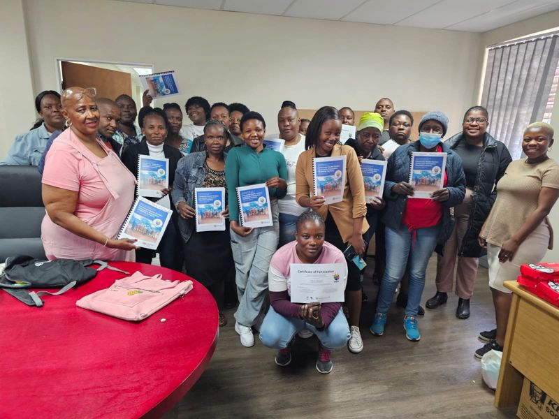
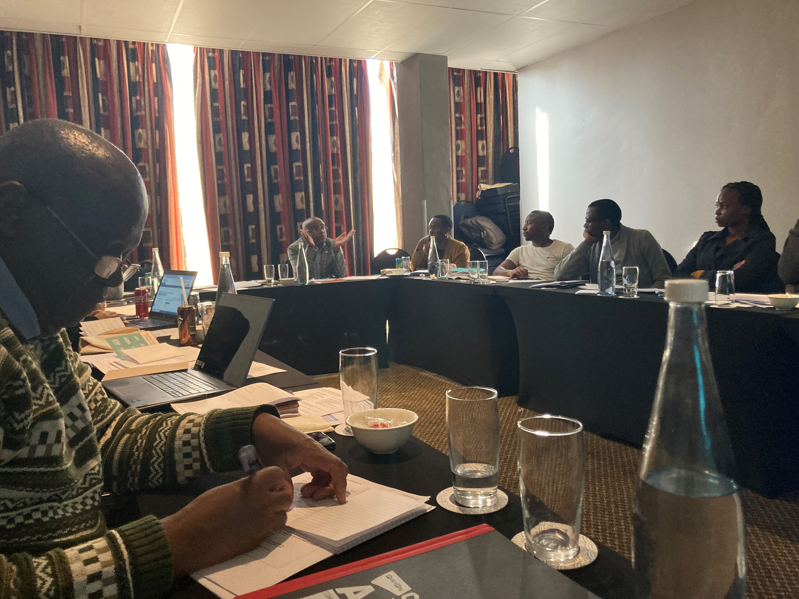
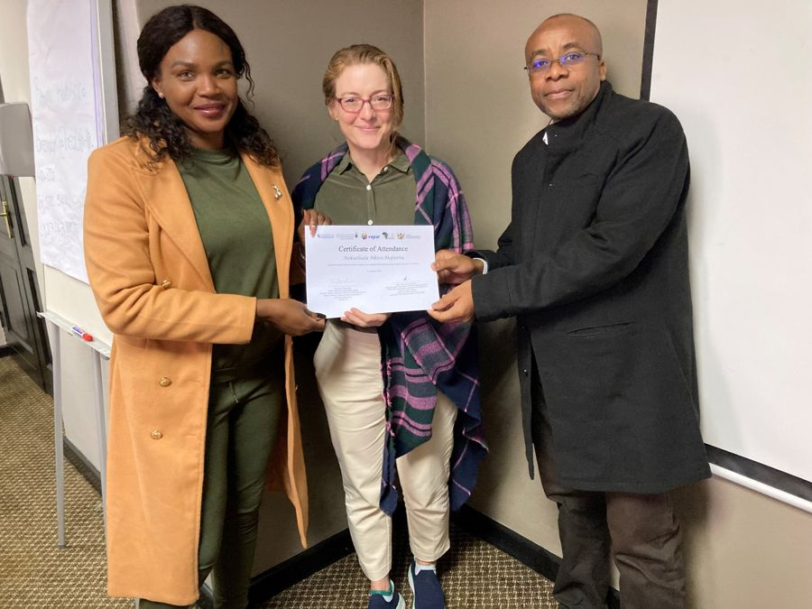

Resources
Training
Building bridges: institutionalising practical solutions for community participation in rural South Africa through primary health care policy and practice engagement.
Changing Policy & Practice Award
Community participation is recognised as a key, enabling mechanism to achieve ‘health for all’; knowledge of how to operationalise the concept is limited, however. Based in rural South Africa, the VAPAR project has developed an intervention supporting Community Health Workers to build competencies in community mobilisation. We have trained over 100 CHWs in a rural sub-district (population 500,000), improving functionality and capacity for local decision-making, and are now responding to demand from the provincial health authority to adapt the intervention for implementation across the province (population 4.4 million).
Our intervention has been rigorously developed and tested responding to local needs and priorities, and is endorsed by health officials. We plan to embed practical solutions for community participation across practice settings, and share learning at provincial and national levels to facilitate policy and strategy commitments to participation in health.
Supported by the Medical Research Foundation, 2024–26. See the provincial scale-up for what happened next.

CHW training manual in community mobilisation · November 2022
“The training taught me ways of identifying challenges and addressing them; I understand challenges better than I used to. I’m confident that now I know even how to identify people who can assist us in dealing with various issues.”CHW · Bushbuckridge sub-district
The manual contains a set of tools for CHWs working in their designated areas as part of Ward Based Primary Healthcare Outreach Teams: convening community stakeholder groups, raising and responding to priority health concerns, understanding concerns from different perspectives, and facilitating and monitoring action in communities, health systems and public services.
Mpumalanga Provincial Health Research Ethics Committee · 2022 and 2024
This two-day training programme was developed with VAPAR and the Committee, with four main intended learning outcomes: describe basic research methodology and design; understand ethical principles, standards and criteria for ethical review and evaluation of research; critically reflect on research governance and monitoring research conduct; and appreciate the decolonisation imperative in global health research.


VAPAR supported the Committee in gaining formal REC (Research Ethics Committee) status.
Voice needs teeth to have bite! Video series · 2024
Drawing on political scientist Jonathan Fox’s work on citizen voice, these introductory videos build understanding of and skills in approaches to strategically advance social accountability in health systems — embedding participatory and cooperative learning and action to improve care and outcomes, and progress broader shifts towards ‘state–society synergies’.
- Part 1: Overview of theory and method — participatory approaches to strategically advance collective agency and accountability | Denny Mabetha
- Part 2: Key processes for participatory learning and action, building social accountability in health systems | Nombuyiselo Nkalanga
- Part 3: PAR data — analysing and reporting the evidence for further action | Maria van der Merwe
For dissertations and taught courses, see Postgraduate teaching and research.